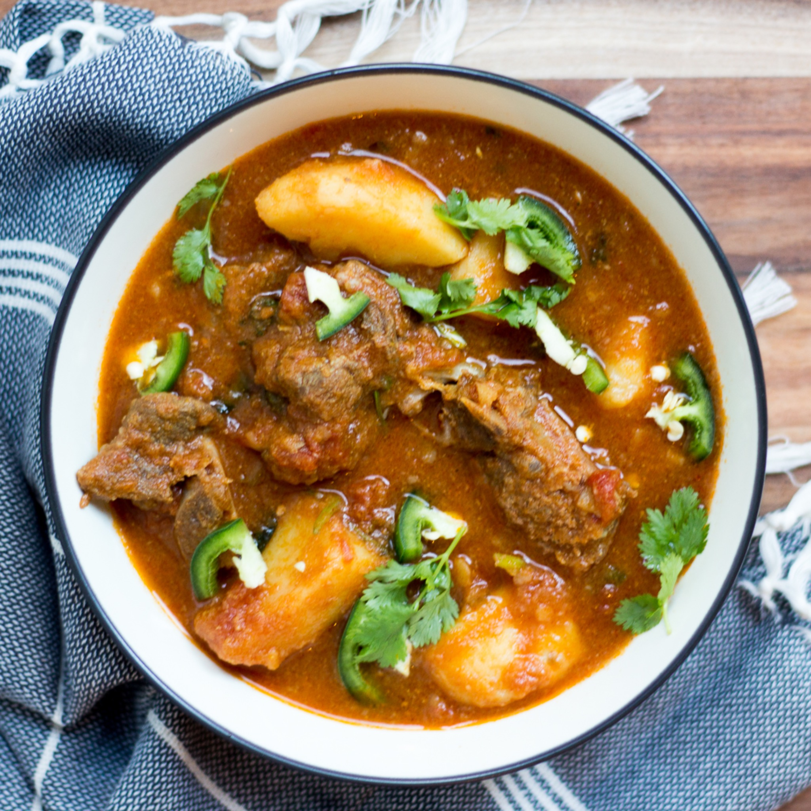

TRADITIONAL BENGALI CUISINE
Bengali Beef Curry with Potatoes
Prep Time15 Minutes

Cook Time50 Minutes
Ingredients
- 1 kg Beef (with bone and fat)
- 4–5 Round Potatoes
- 2–3 Big Red/White Onions (sliced)
- 2 tbsp Ginger Paste
- 1.5 tbsp Garlic Paste
- 1.5 tbsp Chili Powder
- 0.5 tbsp Turmeric
- 1.5 tbsp Roasted Cumin Powder
- 1.5 tbsp Coriander Powder
- 1 tbsp Garam Masala Powder
- 1.5 tbsp Salt
- 80 ml Cooking Oil
- Whole Spices
- Hot Water
Steps to Cook
- Marinate: Combine beef, ginger paste, garlic paste, chili powder, turmeric, cumin, coriander, garam masala, salt, onions, whole spices, and oil. Mix thoroughly by hand.
- Koshano: Cook covered on medium-low high for 5 minutes. Stir. Continue for 20–25 minutes until oil separates. (continue stirring every 2–3 minutes so that it doesnt stick to the the pan or get burned )
- First Simmer: Add 1 cup hot water. Cook until mostly absorbed and meat is 70% done (~20 mins).
- Add Potatoes: Add potatoes and sauté briefly.
- Final Cook: Add ~3 cups hot water. Cook until beef and potatoes are tender.
- Finish: Sprinkle 1/2 tsp roasted cumin. Simmer 10 minutes until oil floats. Add generous ammount of chopped coriander leaves.